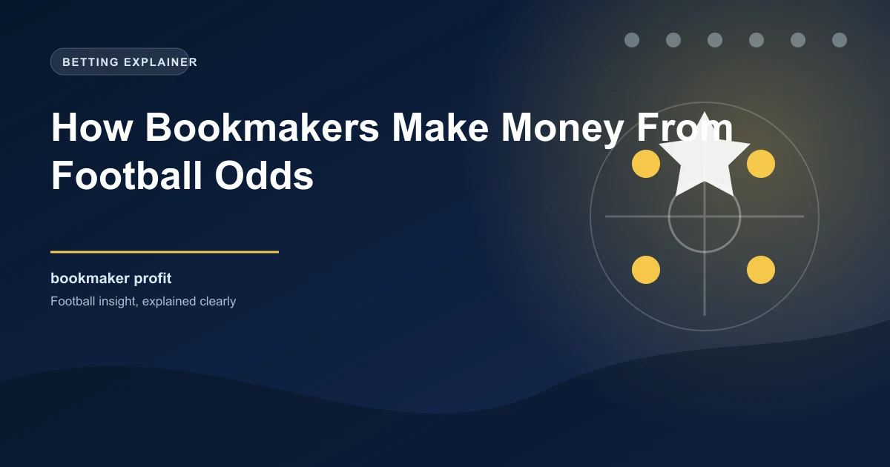

The fundamental question every bettor should understand is how bookmakers actually generate profit. It is not about luck, and it is not about predicting results better than their customers. The bookmaker business model is built on mathematical certainty, and understanding it is the first step toward betting more intelligently.
When you know exactly how the house makes its money, you can structure your betting to work around the edges rather than feeding directly into the profit margin. This guide explains the entire process from start to finish.
Every bookmaker market is designed so that the total implied probability of all outcomes exceeds 100%. This excess is called the overround, and it is the primary mechanism through which bookmakers guarantee long-term profit.
Consider a simple coin flip. The true probability of heads is 50%, and the true probability of tails is 50%. A perfectly fair market would offer odds of 2.00 on both outcomes. But a bookmaker might offer 1.91 on heads and 1.91 on tails. The implied probability of each is 52.36%, giving a total of 104.72%. That 4.72% excess is the overround.
Match: Chelsea vs Wolves
Total implied probability: 60.61% + 26.32% + 18.18% = 105.11%
Bookmaker margin: 5.11%
This means that for every £105.11 wagered across all three outcomes, the bookmaker expects to pay out £100 in winnings. The remaining £5.11 is gross profit.
The overround works regardless of which outcome wins. Whether Chelsea, Wolves, or the draw hits, the bookmaker has already built in its profit. The only way the bookmaker loses money on a market is if the overround is insufficient to cover the payouts, which happens occasionally on individual markets but rarely across their entire operation.
Not all markets carry the same margin. Bookmakers adjust their margins based on several factors, and understanding this helps you know where to look for better value.
The pattern is clear. The more data available and the more competitive the market, the lower the margin. This is because sharp bettors concentrate on well-researched markets, forcing bookmakers to offer tighter margins to remain competitive. On obscure markets with fewer informed bettors, bookmakers can afford to widen their margins.
The overround is the bookmaker's guaranteed profit margin, but it only works if they manage their liability correctly. This is where balancing the book becomes critical.
A bookmaker wants roughly equal money bet on all outcomes (adjusted for the margin). If too much money comes in on Chelsea to win, the bookmaker faces a large liability if Chelsea do win. To manage this risk, they reduce the Chelsea odds to make that outcome less attractive and increase the odds on the other outcomes to attract money there.
Initial odds: Chelsea 1.70, Draw 3.60, Wolves 5.00
Large bets come in on Chelsea. Bookmaker reduces Chelsea odds:
Adjusted odds: Chelsea 1.55, Draw 3.80, Wolves 5.50
The lower Chelsea odds discourage further betting on that outcome while the higher draw and Wolves odds attract bets there, rebalancing the bookmaker's liability.
This is why odds movements can sometimes tell you where the money is going. When Chelsea's odds shorten, it often (but not always) means significant money has been placed on Chelsea winning. However, sharp bettors sometimes move the market with a few large, well-timed bets, so odds movement is not always a reliable indicator of public betting patterns.
Bookmakers distinguish between two types of customers: sharp bettors who consistently find value and recreational bettors who bet for entertainment. The relationship between these two groups is central to how bookmakers operate.
Sharp bettors are valuable to bookmakers because their bets help the bookmaker understand where the true probability lies. When a sharp bettor places a large wager on Chelsea at 1.70, the bookmaker learns that the true odds might be shorter than 1.70, and they adjust accordingly. The sharp bettor might win in the short term, but they also provide information that helps the bookmaker set more accurate odds for the thousands of recreational bettors who follow.
Recreational bettors are the primary profit source. They tend to bet on popular outcomes, chase long odds, and accept poor value without realising it. The combination of the overround and the recreational bettor's tendency to bet on entertainment rather than value ensures the bookmaker's profit.
Sharp bettors focus on finding odds that are mispriced relative to the true probability. They do not care about which team wins or loses on any given day. They care about whether the odds offer positive expected value. Adopting this mindset, even on a smaller scale, is the single most important shift you can make as a bettor.
While the overround is the primary profit mechanism, bookmakers also generate revenue through other means.
Understanding the bookmaker's profit model gives you a clear roadmap for how to bet more effectively. The bookmaker's edge comes from the margin embedded in every market. To overcome this edge, you need to find odds where the true probability is significantly different from the implied probability.
In practice, this means comparing odds across multiple bookmakers to find the best available price, focusing on markets where you have genuine analytical expertise, and avoiding bets where the margin is particularly high. It also means accepting that the bookmaker is your opponent in a zero-sum game, and every pound of profit you make comes directly from their bottom line.
Bookmaker promotions like enhanced odds, free bets, and cashback offers are marketing tools designed to acquire and retain customers. They do not eliminate the bookmaker's margin. In many cases, the terms and conditions attached to promotions ensure the bookmaker maintains or even increases their overall margin on the promoted bets. Always read the small print.
The overround ensures that over a large enough sample of bets, the bookmaker will always be profitable. This is not speculation. It is mathematical certainty. The only variable is the size of the profit, which depends on the margin level and the volume of bets placed.
For bettors, the long-term view is equally important. You cannot overcome the overround by betting more frequently. You can only overcome it by consistently identifying odds that offer positive expected value. This requires discipline, research, and a willingness to walk away from bets that do not meet your criteria.
Our 1X2 predictions are designed to identify value that offsets the bookmaker's margin. Check today's picks.
 Win
Win